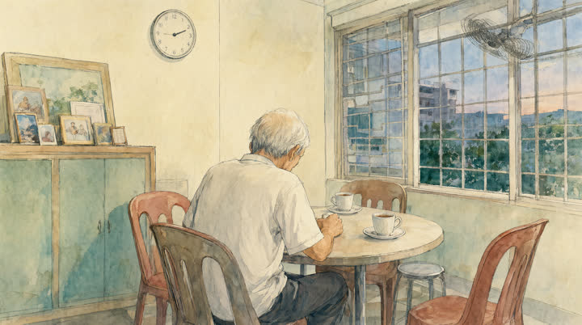
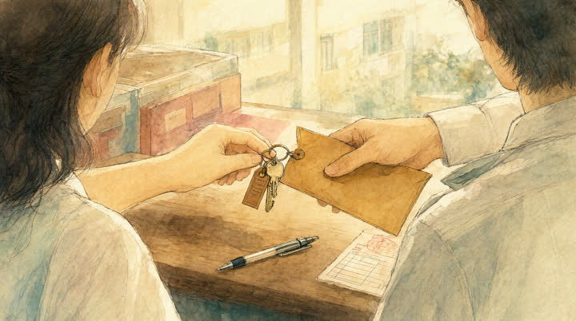
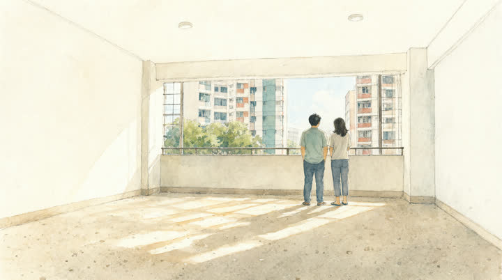
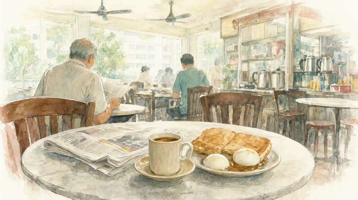
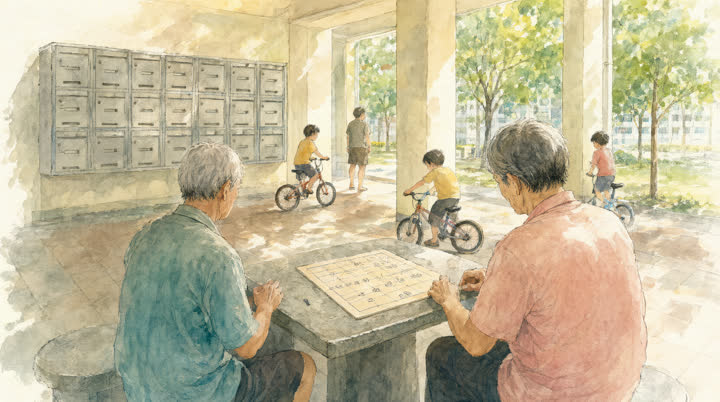
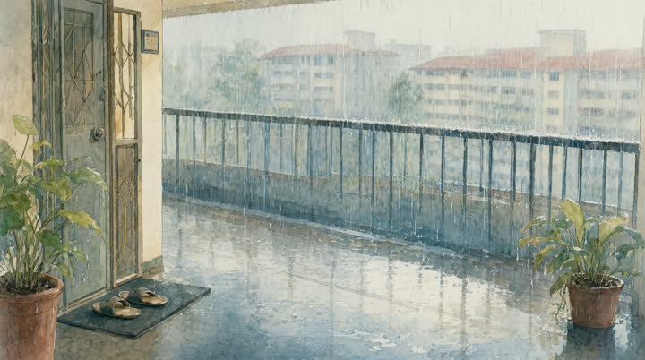
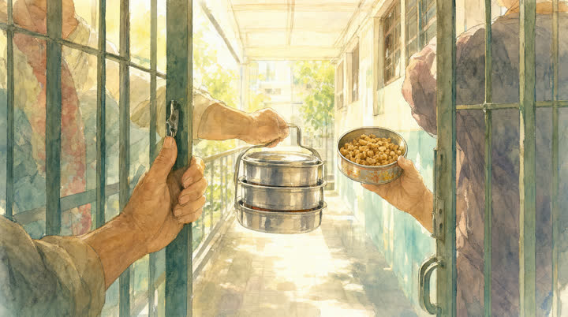
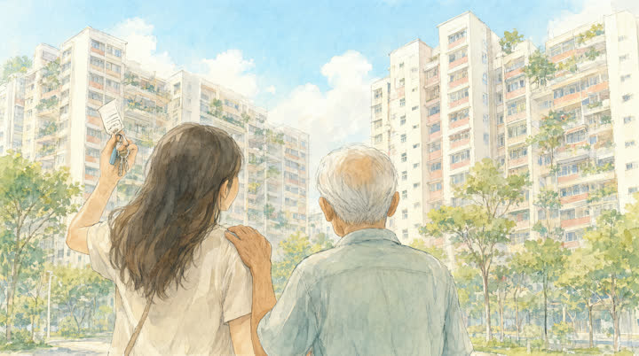

the video
An old man sits alone in the flat he has lived in for 41 years, and remembers. The people and the flat are made up.
how the instructions and files moved
I never sat at the PC. I talked to Claude on my MacBook, and that Claude sent instructions to a second Claude on the Windows desktop. Instructions and files took different routes: instructions through Claude, using Remote Control, and files directly between the machines over Syncthing, on my home network only.
- 1
Instructions. The Mac's Claude sends short messages to the PC's Claude: "do Step 1 only, then stop".
- 2
Job files. The Mac's Claude writes the job into
~/To PC. Syncthing copies it toD:\Inboxon the PC. - 3
Results. The PC writes everything to
D:\Outbox. Syncthing copies it to~/PC Outboxon the Mac, where a small loop waits for a named file and tells the Mac's Claude it has arrived. - 4
Approvals. Every install or setting change on the PC needs my OK, and the PC logs it in an audit file.
the ten pictures
A loss at the start, memories in the middle, the neighbours' knock as the turn, and a granddaughter's own keys at the end. People are shown from behind or as hands, so no one has to look the same from picture to picture.








the morning, step by step
The PC stopped after each step and waited for me.
what ran on the PC
| Step | Tool | Settings | Time |
|---|---|---|---|
| Pictures | ComfyUI, Qwen-Image 2.1 Q8 GGUF | 1664x928, 25 steps | About 47 s each on an RTX 4070 Ti |
| Music | ACE-Step 1.5 turbo | Instrumental, 175 s, 72 BPM, three versions | About 3.3 min each |
| Narration | Kokoro-82M, on the CPU | Voice af_heart, speed 0.92 | About 1 min |
| Video | HyperFrames, Chrome, FFmpeg | 1920x1080, 30 fps, slow pans, captions | Render 2 min 52 s |
The music ducks under the voice, dips a further 6 dB across the rain scene, and rises back for the knock and the new keys. The final mix is −16 LUFS.
what went wrong
| Problem | Fix |
|---|---|
| Fake Chinese on the couplets, even when told "plain red paper, no writing" | Ask for the real phrases: 岁岁平安, 年年有余, 福. One of three seeds got every character right, and that one was kept. |
| Clock faces always came out with numbers | Left as they are. |
| Kokoro misread "kopi" and "kolam" | Respelled them for the voice. "Tingkat" still comes out as "tinkat". |
| The music generator treats a timed arc as a hint, so no version dropped for the rain | Made the drop in the mix. |
licences and credits
The pictures come from Qwen-Image 2.1, under the Qwen Research Licence, which is non-commercial ("research or evaluation purposes only"). So this video can't be monetised unless the pictures are remade with another model. ACE-Step 1.5 is MIT and Kokoro-82M is Apache 2.0.
Idea and direction by Charles Tay. Story and narration written by Claude. AI-generated pictures, voice and music. Video: HyperFrames.